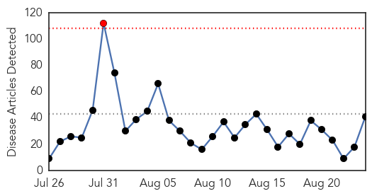
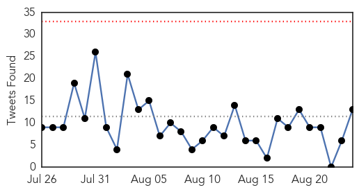

30 Day Trends
Web: 1 alerts, 0 warnings
Twitter: 0 alerts, 0 warnings
Top Articles:
- 1.000
- Anesthesiologists Need to Better Prepare and Educate Themselves About Ebola
- 1.000
- Ebola Virus Disease—Anesthesiologists Need to 'Better Prepare and Educate' Themselves
- 0.999
- Sierra Leone's last known Ebola patient leaves hospital
- 0.999
- Joy as Sierra Leone's last Ebola patient ends treatment but grief and fear remain
- 0.999
- WHO chief calls for urgent transformation of global epidemic response
- 0.999
- Ebola and U.S. National Security
- 0.999
- Sierra Leone discharges last Ebola patient
- 0.999
- Sierra Leone's last known Ebola patient leaves hospital - Sierra Leone
- 0.998
- Sierra Leone releases its last known Ebola patient
- 0.998
- WHO Director-General, Dr Margaret Chan: Opening remarks at the Review Committee on the role of the International Health Regulations in the Ebola outbreak and response - Sierra Leone
- 0.998
- Sierra Leone releases its last known Ebola patient
- 0.998
- Opening remarks at the Review Committee on the role of the International Health
- 0.997
- GISCafe: Update on Ebola, Epidemiology, and Geo-intelligence
- 0.997
- Sierra Leone's last Ebola patient released but nation not yet virus-free
- 0.996
- With many Ebola survivors ailing, doctors evaluate situation
- 0.996
- With many Ebola survivors ailing, doctors evaluate situation
- 0.994
- Thanks Obama! Ebola down from 100 to 10 new cases a day in Liberia
- 0.994
- Sierra Leone's Last Ebola Patient Released, But Nation Not Yet 'Ebola-Free' : The Two-Way : NPR
- 0.994
- Patient at New York City hospital tests positive for Ebola
- 0.993
- With many Ebola survivors ailing, doctors evaluate situation
- 0.991
- MERS death toll in Saudi Arabia reaches 480
- 0.991
- Landmark day in the fight against Ebola
- 0.987
- Sierra Leone's last known Ebola patient is discharged singing and dancing
- 0.986
- Fast paper test detects three diseases at once
- 0.986
- Reason for caution in Sierra Leone , as nation inching closer to being free of deadly disease
- 0.982
- Ebola survivors experience lingering ailments
- 0.980
- Ebola increases burden of care on young woman
- 0.977
- Posters, Bullhorns And Skirts Help Spread The Word About Vaccines
- 0.972
- No room for complacency as Sierra Leone approaches zero
- 0.956
- Dr Stella Adadevoh, Nigeria’s Modern-Day Heroine
- 0.946
- The Challenge of Getting Children to Ebola Healthcare Centers in Sierra Leone
- 0.936
- Lead Ebola scientist Gary Kobinger leaving national lab in Winnipeg - Winnipeg
- 0.928
- the countdown begins in earnest
- 0.911
- Sierra Leone discharges last known Ebola patient - Xinhua
- 0.897
- Page not found
- 0.840
- Scientist who led Ebola drug effort to leave Canada's national lab
- 0.801
- Getting The WHO To Take The Reins In Global Pandemics
- 0.794
- Day Post Ebola Strategy Summit for Sierra Leone has ended in Texas
- 0.767
- Welcome to the Expotimes News
- 0.717
- Last ebola patient to be discharged today « Awoko Newspaper
- 0.670
- Statement from the United Nations Country Team in Sierra Leone over the rape and murder of a young woman at Lumley Beach, Freetown
Top Tweets:
- 0.970
- Sierra Leone releases its last Ebola patient starts countdown to WHO Ebola ... - U.S. News & Worl... http://t.co/CU2Ie5TXac ebola EVD
- 0.894
- Dr Chan: In West Africa WHO and many others were late in recognizing the potential of the [Ebola] outbreak to grow so explosively
- 0.882
- Sierra Leone discharges last Ebola patient - The News http://t.co/7wlxpiiXdK ebola EVD
- 0.865
- Dr Chan addressed the Intl Health Regulations Review Committee meeting on the Ebola outbreak & response in Geneva this morning
- 0.848
- Ebola Virus Disease--Anesthesiologists Need to 'Better Prepare and Educate ... - Newswise (press release) http://t.co/cAqJwOkGoY ebola EVD
- 0.807
- RT: Sierra Leone's Kambia District a former Ebola hotspot goes 42 days without a case of the virus. ResilientZero http://t.co/…
- 0.799
- Sierra Leone has discharged its last Ebola patient - BBC News http://t.co/LZOQDHEUid ebola EVD
- 0.757
- Rapid Isolation and Treatment of Ebola (RITE) roll-out decreased duration of outbreaks in Liberia. ICEID2015
- 0.605
- Ebola survivors ailing; doctors evaluate situation - The Denver Post http://t.co/guE9s423mG ebola EVD
- 0.597
- Many Ebola survivors still unwell - GOPUSA http://t.co/5e2pLf1nW0 ebola EVD
- 0.586
- Anesthesiologists Need to Better Prepare and Educate Themselves About Ebola - Infection Control Today http://t.co/boGcJPFgTV ebola EVD
- 0.580
- Ebola call center partnership w. CDC eHealth Africa others increased Sierra Leone surveillance capacity. http://t.co/K30xmKhA2T
- 0.566
- Dr Chan: Ebola in West Africa was the largest longest and most deadly event in the nearly four-decade history of this disease
Web/News Articles
Tweets
Article Locations

Article Confidences